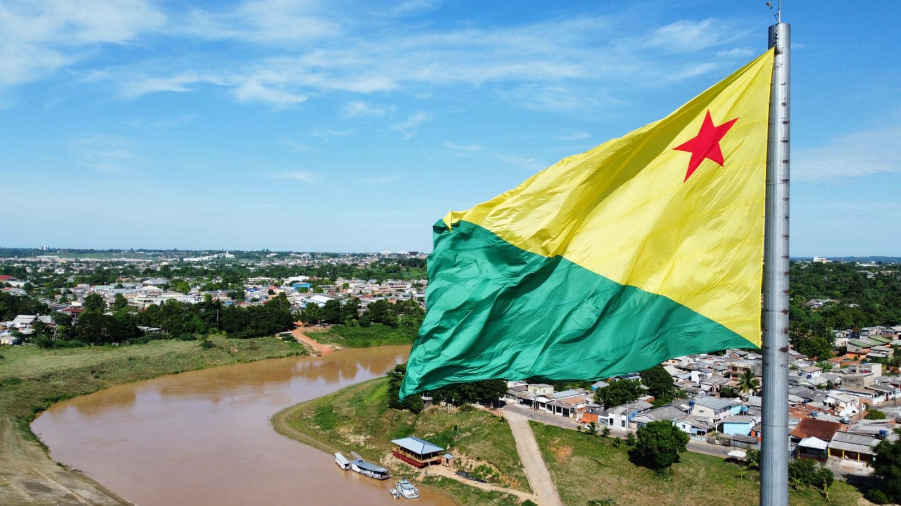

O Acre é um estado da Região Norte do Brasil, com capital em Rio Branco. Faz fronteira com o Peru, a Bolívia, Amazonas e Rondônia. Tem cerca de 830 mil habitantes e é amplamente coberto pela Floresta Amazônica. Sua economia se baseia no extrativismo (como borracha e castanha), agropecuária e serviços. O estado tem forte tradição ambiental e cultural, com influência indígena e seringueira, sendo símbolo da luta pela preservação da Amazônia.
 Voltar